Spatial Allocation Strategies
Source:vignettes/articles/spatial-allocation.Rmd
spatial-allocation.RmdWhen a fleet decides where to fish, it optimizes some
objective across the available patches. In marlin, the
spatial_allocation argument to create_fleet
controls what that objective is. Different objectives produce very
different spatial footprints of fishing effort, which in turn shape the
spatial depletion patterns for every species in the system.
marlin currently supports the following
spatial_allocation options:
-
rpue(revenue per unit effort): the fleet chases the highest catch rates weighted by price. This is the default and a common assumption in spatial fleet models. -
revenue: the fleet moves toward patches with the highest total revenue, not per-unit-effort. High-effort patches stay attractive even as catch rates decline. -
ppue(profit per unit effort): likerpue, but subtracts the cost of fishing (including travel costs from port). Patches far from port become less attractive. -
profit: the fleet moves toward patches with the highest total profit. Similar torevenuebut cost-aware. -
marginal_profit: the fleet responds to the marginal return of adding one more unit of effort to a patch. This is the most economically sophisticated option: a patch with high total profit but diminishing returns will be less attractive than one where the next unit of effort still pays off. -
cpue/catch: catch-based variants (not price-weighted). -
marginal_revenue: likemarginal_profitbut ignoring costs. -
manual: effort distributed proportionally to continuous weights infishing_grounds$fishing_ground. -
uniform: effort spread equally across all open patches.
The mechanics of how effort is redistributed in response to these objectives is explained in detail in the “How spatial allocation works” section below. This vignette then demonstrates each option using a shared two-species, two-fleet system with fishing ports, so that the spatial cost structure matters for the cost-aware strategies.
Independently of the strategy, fleets can optionally smooth their
objective surface over time via the memory_halflife
argument to create_fleet(). This dampens single-step
feedback oscillations under strong fleet-biomass coupling (e.g. after
MPA closures). It is documented in “Optional: temporal memory of the
objective surface” below, with an empirical demonstration in Scenario
5.
How spatial allocation works: the algorithm
Spatial effort allocation in marlin is handled by the
allocate_effort function, which uses a multiplicative
velocity-field update to redistribute a fleet’s total effort across
patches in response to an economic signal (the “objective”). The
algorithm is designed to be robust, gradient-based, and numerically
stable even when patches differ wildly in profitability.
Because effort is updated step-by-step rather than solved for an equilibrium directly, the spatial distribution takes several time steps — often a few years of simulated time — to settle after a transient or perturbation (such as the start of a run or an MPA closure). Early-run spatial maps, or those captured immediately after a structural change, show effort still converging rather than at its steady state, and should be interpreted with that in mind. Allowing an adequate burn-in period before reading off spatial patterns is generally advisable.
Step-by-step procedure
For each fleet at each time step:
1. Flatness detection
Before attempting to optimize, the algorithm checks whether the
objective is effectively uniform across patches. If the range-based
coefficient of variation is below a threshold (default 0.1%):
then effort is distributed uniformly across all open patches and the optimization is skipped. This prevents spurious concentration along edges when there is no meaningful gradient to follow.
2. Standardization
The objective
in each patch
is centered and scaled to produce a
-score:
where can be the median absolute deviation (default, most robust), interquartile range, or standard deviation. The scores are then clipped to (default ) to prevent extreme updates from outliers:
Closed patches have .
3. Velocity field
The standardized objective becomes a velocity after removing the mean
across open patches:
This ensures that the velocity field integrates to zero over the open domain, which is necessary for conserving total effort. Patches with above-average objectives have (attracting effort), and patches with below-average objectives have (repelling effort).
4. Multiplicative update
Current effort
is updated via:
where
(the fleet’s responsiveness argument, default
0.025) controls the step size. The proportionality constant
is chosen to conserve total effort:
This is implemented in log-space for numerical stability. Closed patches receive .
5. Optional exploration mixing
If eps_mix > 0, the result is blended with a uniform
distribution to allow re-entry into temporarily abandoned patches:
Optional: temporal memory of the objective surface
memory_halflife is a conditional remedy, not a
default upgrade. If you see period-2 sawtooth in patch-level
effort or catch (typically under marginal_profit /
marginal_revenue allocation, or with MPA closures +
cost-aware allocation), it can dampen the oscillation. If your run looks
smooth at the default memory_halflife = 0, leave it
there.
The mechanism: by default, the objective surface a fleet acts on is rebuilt fresh each step from the previous step’s outcomes — a one-step-lag signal. Under strong fleet-biomass coupling this can drive period-2 sawtooth oscillation in patch effort: last-step buffet picks where to fish, this-step fishing changes biomass, next-step buffet inverts. The vanilla scenarios in this vignette don’t trigger this, but structural perturbations like MPA closures (which suddenly shift the open-patch set) can.
Setting memory_halflife > 0 on a fleet replaces the
raw per-patch objective
with an exponentially-weighted moving average:
The half-life is specified in years and converted internally to steps: , so a given value produces the same calendar-time smoothing regardless of how many seasons per year the model uses.
Three implementation details matter:
- Closed-patch policy is “freeze and resume”: the EWMA only updates on patches that are currently open. Closed patches retain their last-seen smoothed value, so an MPA that closes then re-opens a patch sees the fleet’s pre-closure memory of it.
- Bootstrap ramp: early post-bootstrap steps use where counts post-bootstrap updates for that fleet. This avoids anchoring the smoothed surface to the first observed buffet column.
- Phase-lag tradeoff: an EWMA introduces a phase lag of roughly years between a real change in patch marginal value and the fleet’s perceived value. Long half-lives can replace high-frequency sawtooth with low-frequency overshoot — a different pathology. Practical sweet spot is 0.5–1.5 years for most fishery time scales; see Scenario 5 for an empirical demonstration.
Memory smooths only the spatial allocation objective. Total
fleet effort under open_access or sole_owner
still responds to the raw fleet-level profitability signal, which has
its own slow timescale built in via the entry/exit caps.
Why this algorithm?
The multiplicative update has several desirable properties:
- Gradient-based: Effort flows “uphill” toward high-value patches along the objective gradient.
- Effort-conserving: Total effort is exactly preserved.
- Non-negative: Effort cannot become negative (provided it starts non-negative).
- Smooth transitions: The exponential update avoids discontinuous jumps, making the dynamics more realistic.
- Scale-invariant: The standardization step ensures that the update magnitude is comparable across fleets and time steps regardless of absolute objective values.
The algorithm is related to replicator dynamics from evolutionary game theory and gradient flow on the simplex. In the limit of small , the continuous-time equivalent is:
where is the effort-weighted average velocity. This is a stable dynamical system that converges to a Nash equilibrium where effort is concentrated in patches with the highest objective values.
Objectives available
The objective
is drawn from the “buffet” returned by go_fish, which
computes prospective catch, revenue, and profit for each patch without
actually removing fish. The spatial_allocation setting maps
to:
spatial_allocation |
Objective | Description | Economic interpretation |
|---|---|---|---|
rpue |
Revenue per unit effort | Value-weighted catch rate | Effort shifts toward patches that produce higher revenue per unit effort. This reflects fleets choosing locations where each unit of effort generates more revenue on average, without explicitly accounting for how crowding reduces returns. |
revenue |
Total revenue | Value-weighted catch | Effort shifts toward patches that produce the highest total revenue. This reflects fleets targeting areas with the highest overall value of catch, regardless of operating costs or how returns change as more vessels enter the area. |
ppue |
Profit per unit effort | Revenue net of costs per effort | Effort shifts toward patches that produce higher profit per unit effort. This reflects fleets choosing locations where each unit of effort generates more net profit on average, accounting for travel and operating costs. |
profit |
Total profit | Revenue minus costs | Effort shifts toward patches that produce the highest total profit. This reflects fleets targeting areas with the highest overall net returns, without explicitly accounting for how additional effort changes profitability. |
cpue |
Catch per unit effort | Biomass-weighted catch rate | Effort shifts toward patches that produce higher catch per unit effort. This reflects fleets choosing locations where each unit of effort generates more catch on average, regardless of price. |
catch |
Total catch | Biomass-weighted catch | Effort shifts toward patches that produce the highest total catch. This reflects fleets targeting areas with the highest total biomass or catch, regardless of economic value. |
marginal_profit |
Marginal profit | Change in total profit from the next unit of effort (finite difference) | Effort shifts toward patches where adding a small amount of additional effort would increase total profit the most. Over time, effort tends to distribute so that the last unit of effort earns similar profit across all actively fished patches. This is the closest approximation to the Ideal Free Distribution (IFD), where effort distributes so that no vessel can increase profit by moving effort to another patch. |
marginal_revenue |
Marginal revenue | Change in total revenue from the next unit (finite difference) | Effort shifts toward patches where adding a small amount of effort would increase total revenue the most. Over time, effort tends to distribute so that the last unit of effort generates similar revenue across actively fished patches. This reflects the production-driven component of the Ideal Free Distribution (IFD), but does not fully account for costs. |
manual |
User weights | Proportional to fishing_grounds$fishing_ground
|
Effort follows externally specified spatial preferences (e.g., fishing traditions, regulations, or predefined fishing grounds), rather than responding directly to economic outcomes. |
uniform |
None | Equal effort across open patches | Effort is spread evenly across space. Useful as a baseline representing no spatial preference or complete uncertainty about conditions. |
Choosing a strategy for your use case:
-
Unregulated open-access fishery? →
revenueorrpue(strong tragedy-of-commons) -
Limited-entry or regulated fishery with individual
decisions? →
ppue(moderate, cost-aware) -
Cooperative, ITQ system, or single-owner fleet? →
marginal_profit(sole-owner optimum) -
Transitional or mixed governance? →
profitormarginal_revenue - Exploring spatial management or MPA impacts across behavioral regimes? → Run multiple scenarios to bracket uncertainty
The marginal variants require calc_marginal_value to
compute finite-difference derivatives each step, which adds
computational cost but produces more economically sophisticated spatial
behavior (especially for sole-owner fleets).
Shared Setup
We’ll use a 10×10 grid with two critters (bigeye tuna and skipjack
tuna) that have different spatial habitats generated by
sim_habitat, and two fishing fleets (a longline fleet under
open access dynamics and a handline fleet under constant effort). Two
ports are placed asymmetrically to create spatial cost gradients.
library(marlin)
library(ggplot2)
library(dplyr)
library(tidyr)
theme_set(marlin::theme_marlin(base_size = 12) +
theme(legend.position = "top"))
resolution <- c(20, 20)
patches <- prod(resolution)
years <- 20
seasons <- 2
time_step <- 1 / seasons
# Two ports: one nearshore corner, one offshore
ports <- data.frame(x = c(1, 8), y = c(1, 9))Habitat
We use sim_habitat to generate spatially correlated
habitat for each species. The kp parameter controls the
spatial smoothness (lower = smoother), and we supply a negative
cross-species correlation so that the two species prefer different parts
of the seascape. This creates a spatial tradeoff: fleets cannot maximize
catch of both species in the same patch.
# Negative correlation: species prefer different areas
critter_correlations <- matrix(c(1, -0.5,
-0.5, 1), nrow = 2)
habitats <- sim_habitat(
critters = c("bigeye", "skipjack"),
kp = 0.1,
critter_correlations = critter_correlations,
resolution = resolution,
patch_area = 1,
output = "list"
)
# Extract the habitat matrices
bigeye_habitat <- habitats$critter_distributions$bigeye
skipjack_habitat <- habitats$critter_distributions$skipjack
# Quick look at the generated habitats
habitat_df <- expand_grid(critter = c("bigeye", "skipjack"),
x = 1:resolution[1],
y = 1:resolution[2]) %>%
arrange(critter, x, y) %>%
mutate(
habitat = c(as.vector(bigeye_habitat),
as.vector(skipjack_habitat))
)
ggplot(habitat_df) +
geom_tile(aes(x, y, fill = habitat)) +
geom_point(data = ports, aes(x, y),
color = "red", size = 3, shape = 17) +
scale_fill_viridis_c(option = "D") +
facet_wrap(~critter) +
coord_equal() +
labs(title = "Underlying Habitat Quality",
subtitle = "Red triangles = port locations",
fill = "Habitat")
Fauna
Both species use the habitats generated above. Bigeye are a slower-moving, more heavily fished species, while skipjack are more mobile and less depleted.
fauna <-
list(
"bigeye" = create_critter(
common_name = "bigeye tuna",
habitat = list(bigeye_habitat),
season_blocks = list(1:seasons),
adult_home_range = 5,
recruit_home_range = 10,
density_dependence = "local_habitat",
seasons = seasons,
depletion = 0.5,
init_explt = 0.2,
explt_type = "f",
resolution = resolution,
steepness = 0.6,
ssb0 = 1000
),
"skipjack" = create_critter(
scientific_name = "Katsuwonus pelamis",
habitat = list(skipjack_habitat),
season_blocks = list(1:seasons),
adult_home_range = 3,
recruit_home_range = 8,
density_dependence = "local_habitat",
seasons = seasons,
depletion = 0.6,
init_explt = 0.15,
explt_type = "f",
resolution = resolution,
steepness = 0.7,
ssb0 = 800
)
)Fleet Builder
To keep the code DRY, we define a helper function that creates the
two-fleet system for any pair of spatial_allocation
settings. The longline fleet operates under open access (total effort
responds to profitability) and the handline fleet under constant effort.
Both fleets have the same port locations and a
travel_fraction of 0.3, meaning travel costs comprise 30%
of total costs at equilibrium.
build_fleets <- function(longline_allocation, handline_allocation) {
fleets <- list(
"longline" = create_fleet(
list(
"bigeye" = Metier$new(
critter = fauna$bigeye,
price = 10,
sel_form = "logistic",
sel_start = 1,
sel_delta = 0.01,
catchability = 0,
p_explt = 2
),
"skipjack" = Metier$new(
critter = fauna$skipjack,
price = 5,
sel_form = "logistic",
sel_start = 0.8,
sel_delta = 0.1,
catchability = 0,
p_explt = 1
)
),
ports = ports,
base_effort = patches,
resolution = resolution,
spatial_allocation = longline_allocation,
fleet_model = "open_access",
cr_ratio = 1,
travel_fraction = 0.7
),
"handline" = create_fleet(
list(
"bigeye" = Metier$new(
critter = fauna$bigeye,
price = 10,
sel_form = "logistic",
sel_start = 1.2,
sel_delta = 0.1,
catchability = 0,
p_explt = 1
),
"skipjack" = Metier$new(
critter = fauna$skipjack,
price = 8,
sel_form = "logistic",
sel_start = 0.5,
sel_delta = 0.2,
catchability = 0,
p_explt = 2
)
),
ports = ports,
base_effort = patches,
resolution = resolution,
spatial_allocation = handline_allocation,
fleet_model = "constant_effort",
cr_ratio = 1,
travel_fraction = 0.5
)
)
fleets <- tune_fleets(fauna, fleets, tune_type = "depletion")
fleets
}Plotting Helpers
We define helpers to extract the final-step effort and biomass and plot them as spatial maps with port locations.
plot_effort <- function(sim, fleet_name, title = "") {
final_step <- sim[[length(sim)]]
effort_vec <- final_step[[1]]$e_p_fl[, fleet_name]
patch_effort <- expand_grid(
x = 1:resolution[1],
y = 1:resolution[2]
) %>%
mutate(effort = effort_vec)
ggplot(patch_effort) +
geom_tile(aes(x, y, fill = effort)) +
geom_point(data = ports, aes(x, y),
color = "red", size = 3, shape = 17) +
scale_fill_viridis_c(option = "C") +
labs(title = title, fill = "Effort") +
coord_equal() +
theme(plot.title = element_text(size = 11))
}
plot_biomass <- function(proc, title = "") {
last_step <- max(proc$fauna$step)
ssb_df <- proc$fauna %>%
filter(step == last_step) %>%
group_by(critter, x, y) %>%
summarise(ssb = sum(ssb, na.rm = TRUE), .groups = "drop")
ggplot(ssb_df) +
geom_tile(aes(x, y, fill = ssb)) +
geom_point(data = ports, aes(x, y),
color = "red", size = 2, shape = 17) +
scale_fill_viridis_c(option = "B") +
facet_wrap(~critter) +
coord_equal() +
labs(title = title, fill = "SSB") +
theme(plot.title = element_text(size = 11))
}Scenario 1: rpue vs revenue
In this scenario the longline fleet allocates effort based on
rpue (revenue per unit effort) while the handline fleet
chases total revenue.
The rpue fleet moves toward patches where catch rates
are highest per unit effort. This tends to spread effort more evenly,
because as a high-RPUE patch attracts more effort, catch rates decline
there relative to less-fished patches.
The revenue fleet, by contrast, gravitates toward
patches with the highest total revenue regardless of how much
effort is already there. This can lead to stronger concentration of
effort in productive patches, since high effort × moderate catch rate
can still produce high total revenue.
Neither strategy accounts for travel costs, so port location does not directly influence where these fleets fish.
fleets_1 <- build_fleets("rpue", "revenue")
time_1 <- system.time({
sim_1 <- simmar(fauna = fauna, fleets = fleets_1, years = years)
})
proc_1 <- process_marlin(sim_1, time_step = time_step)
plot_effort(sim_1, "longline", "Longline Effort (rpue)")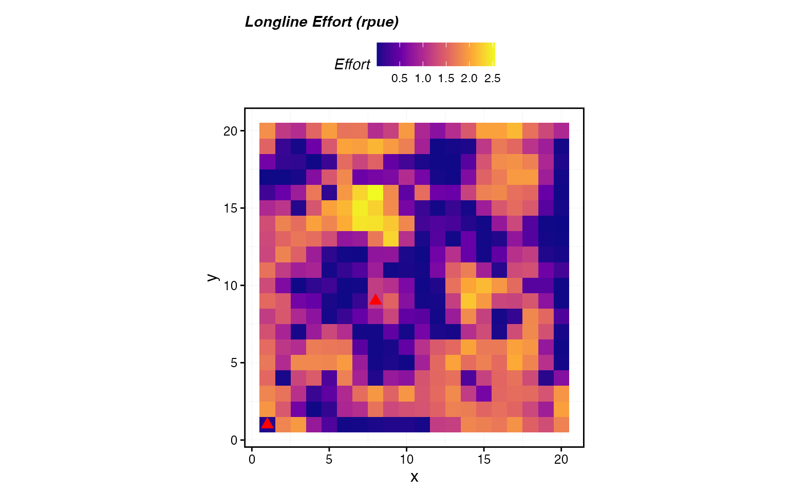
plot_effort(sim_1, "handline", "Handline Effort (revenue)")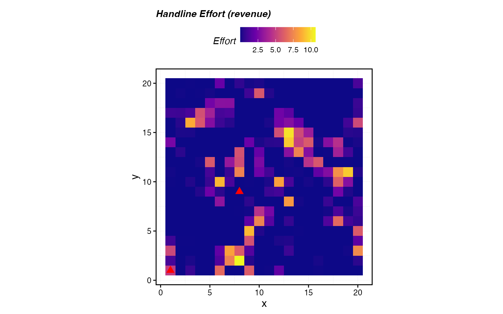
plot_biomass(proc_1, "SSB — rpue vs revenue")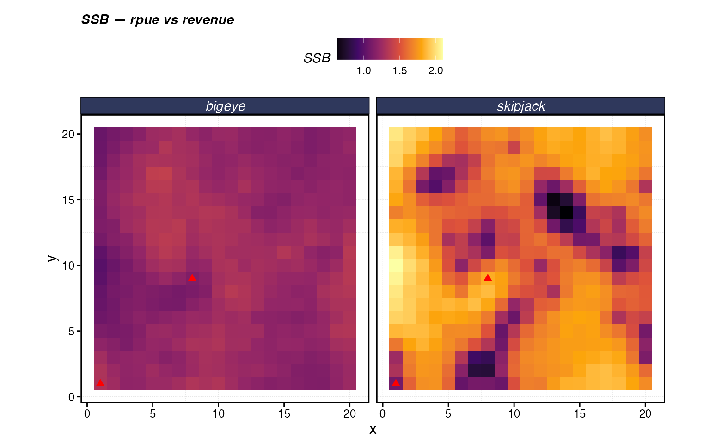
Notice how the longline fleet (rpue) distributes effort more diffusely across productive patches, while the handline fleet (revenue) concentrates more heavily in the highest-biomass areas. The biomass maps show the resulting depletion patterns: species are drawn down most where their habitat overlaps with each fleet’s effort hotspots.
Scenario 2: ppue vs profit
Now we contrast the two cost-aware strategies. The longline fleet
uses ppue (profit per unit effort) and the handline fleet
uses total profit. Both account for the cost of traveling
from port, but they differ in whether the objective is per-unit-effort
or total.
Because ppue divides profit by effort, it penalizes
patches where effort is high relative to returns. The
profit strategy rewards patches where total profit (revenue
minus costs) is maximized, which can favor concentrating effort in
nearby productive patches even if per-unit returns are declining.
With travel_fraction = 0.3 and two asymmetrically placed
ports, we should see both fleets pulled toward the ports relative to the
cost-naive strategies above.
fleets_2 <- build_fleets("ppue", "profit")
time_2 <- system.time({
sim_2 <- simmar(fauna = fauna, fleets = fleets_2, years = years)
})
proc_2 <- process_marlin(sim_2, time_step = time_step)
plot_effort(sim_2, "longline", "Longline Effort (ppue)")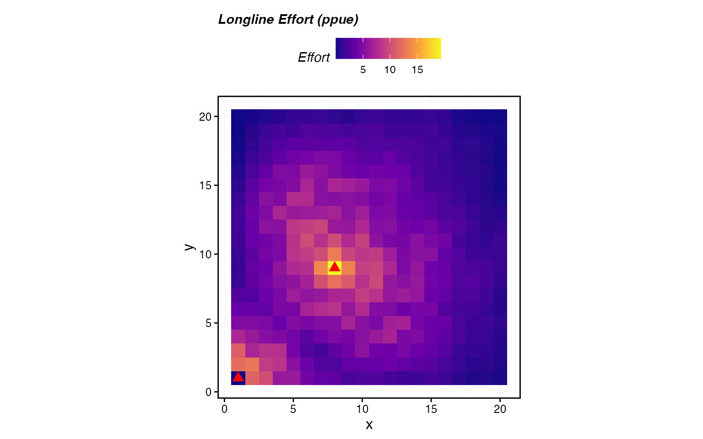
plot_effort(sim_2, "handline", "Handline Effort (profit)")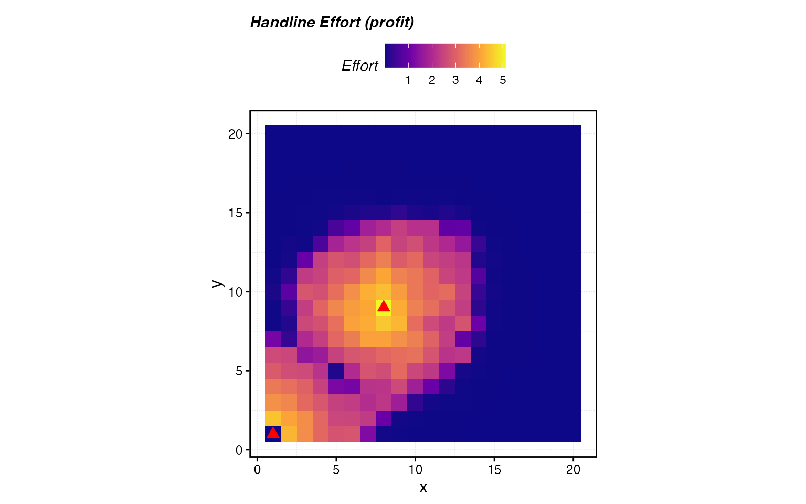
plot_biomass(proc_2, "SSB — ppue vs profit")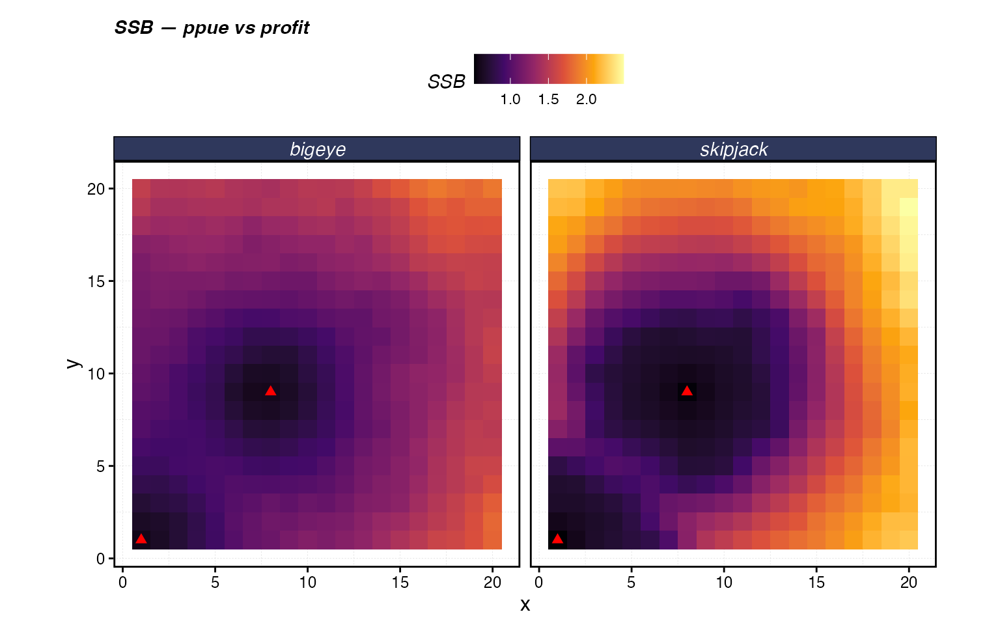
Compare these maps to Scenario 1. The cost-aware fleets are pulled
toward the port locations (red triangles), and patches far from any port
receive less effort than they would under rpue or
revenue. The biomass maps show that remote patches retain
more biomass under cost-aware allocation, since fleets fish them less
intensively.
Scenario 3: marginal_profit vs rpue
Finally, we demonstrate marginal_profit, the most
economically sophisticated allocation strategy. The longline fleet now
allocates based on the marginal return to an additional unit of
effort in each patch, while the handline fleet uses the simpler
rpue as a baseline for comparison.
Under marginal_profit, the fleet responds to diminishing
returns: even if a patch has high total profit or high RPUE, if the
next unit of effort there would yield little additional return,
the fleet reallocates toward patches where marginal returns are still
high. This tends to produce the most even spatial distribution of effort
among all the profit-aware strategies, because it directly penalizes
over-concentration.
fleets_3 <- build_fleets("marginal_profit", "rpue")
time_3 <- system.time({
sim_3 <- simmar(fauna = fauna, fleets = fleets_3, years = years)
})
proc_3 <- process_marlin(sim_3, time_step = time_step)
plot_effort(sim_3, "longline", "Longline Effort (marginal_profit)")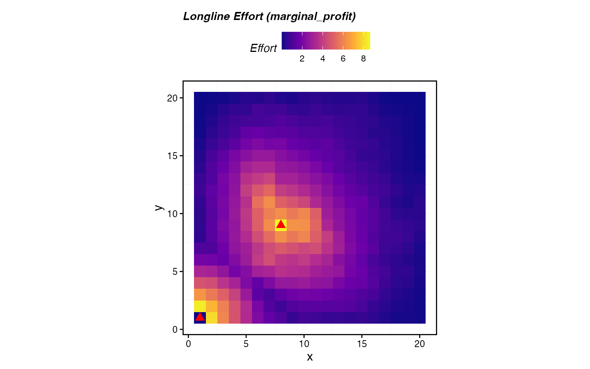
plot_effort(sim_3, "handline", "Handline Effort (rpue)")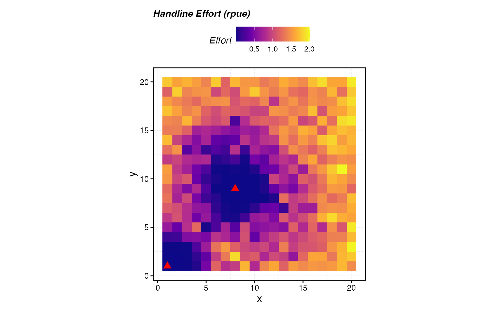
plot_biomass(proc_3, "SSB — marginal_profit vs rpue")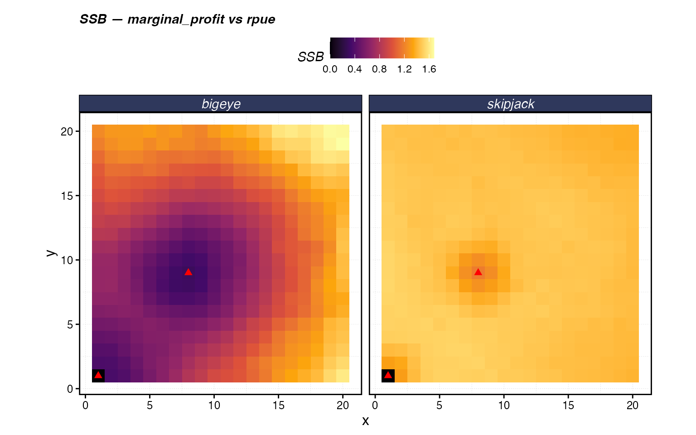
The marginal_profit fleet (longline) typically produces
a smoother effort surface than any of the other cost-aware strategies.
Compared to the rpue handline fleet sharing the same
waters, the marginal profit fleet is more sensitive to congestion: it
avoids piling into patches that are already heavily fished, even if
those patches still have high average returns. The biomass maps reflect
this — depletion tends to be more spatially uniform under
marginal_profit.
Scenario 4: sole_owner vs open_access
The previous scenarios varied the spatial allocation
strategy while keeping the fleet model (how total effort changes over
time) fixed. Now we flip that: both fleets use the same spatial
allocation (ppue) but differ in their fleet
model.
The classic result from fisheries economics is that open access fleets fish until average profit is zero (all rents dissipated), while a sole owner — who internalizes the stock externality — stops expanding effort when the marginal profit of the next unit of effort hits zero. This corresponds to maximum economic yield (MEY), which occurs at lower effort and higher biomass than the open access equilibrium.
In marlin, fleet_model = "sole_owner"
implements this by using the same dynamic entry/exit machinery as open
access, but replacing the profitability signal: instead of responding to
total profits, the sole owner responds to the effort-weighted mean of
patch-level marginal profits computed by
calc_marginal_value.
We build this scenario manually rather than using
build_fleets, since the fleets differ in
fleet_model rather than
spatial_allocation.
fleets_oa <- list(
"longline" = create_fleet(
list(
"bigeye" = Metier$new(
critter = fauna$bigeye,
price = 10,
sel_form = "logistic",
sel_start = 1,
sel_delta = 0.01,
catchability = 0,
p_explt = 2
),
"skipjack" = Metier$new(
critter = fauna$skipjack,
price = 5,
sel_form = "logistic",
sel_start = 0.8,
sel_delta = 0.1,
catchability = 0,
p_explt = 1
)
),
ports = ports,
base_effort = patches,
resolution = resolution,
spatial_allocation = "ppue",
fleet_model = "open_access",
cr_ratio = 1,
travel_fraction = 0.7
),
"handline" = create_fleet(
list(
"bigeye" = Metier$new(
critter = fauna$bigeye,
price = 10,
sel_form = "logistic",
sel_start = 1.2,
sel_delta = 0.1,
catchability = 0,
p_explt = 1
),
"skipjack" = Metier$new(
critter = fauna$skipjack,
price = 8,
sel_form = "logistic",
sel_start = 0.5,
sel_delta = 0.2,
catchability = 0,
p_explt = 2
)
),
ports = ports,
base_effort = patches,
resolution = resolution,
spatial_allocation = "ppue",
fleet_model = "open_access",
cr_ratio = 1,
travel_fraction = 0.5
)
)
fleets_so <- fleets_oa
fleets_so$longline$fleet_model <- "sole_owner"
fleets_so$handline$fleet_model <- "sole_owner"
fleets_oa <- tune_fleets(fauna, fleets_oa, tune_type = "depletion")
fleets_so <- tune_fleets(fauna, fleets_so, tune_type = "depletion")Now we run both simulations side by side.
years_4 <- 50 # longer run to let both fleet models reach equilibrium
time_4a <- system.time({
sim_4a <- simmar(fauna = fauna, fleets = fleets_oa, years = years_4)
})
time_4b <- system.time({
sim_4b <- simmar(fauna = fauna, fleets = fleets_so, years = years_4)
})
proc_4a <- process_marlin(sim_4a, time_step = time_step)
proc_4b <- process_marlin(sim_4b, time_step = time_step)The key comparison is the trajectory of total effort and profits over time. The open access fleet should converge to zero profits, while the sole owner should stabilize at lower effort with positive profits.
effort_ts <- bind_rows(
proc_4a$fleets %>%
group_by(step, fleet) %>%
summarise(effort = sum(effort), .groups = "drop") %>%
mutate(model = "open_access"),
proc_4b$fleets %>%
group_by(step, fleet) %>%
summarise(effort = sum(effort), .groups = "drop") %>%
mutate(model = "sole_owner")
)
ggplot(effort_ts, aes(step * time_step, effort, color = model)) +
geom_line() +
facet_wrap(~fleet) +
scale_x_continuous(name = "Year") +
scale_y_continuous(name = "Total Effort", limits = c(0, NA)) +
labs(title = "Total Effort: Open Access vs Sole Owner",
color = "Fleet Model")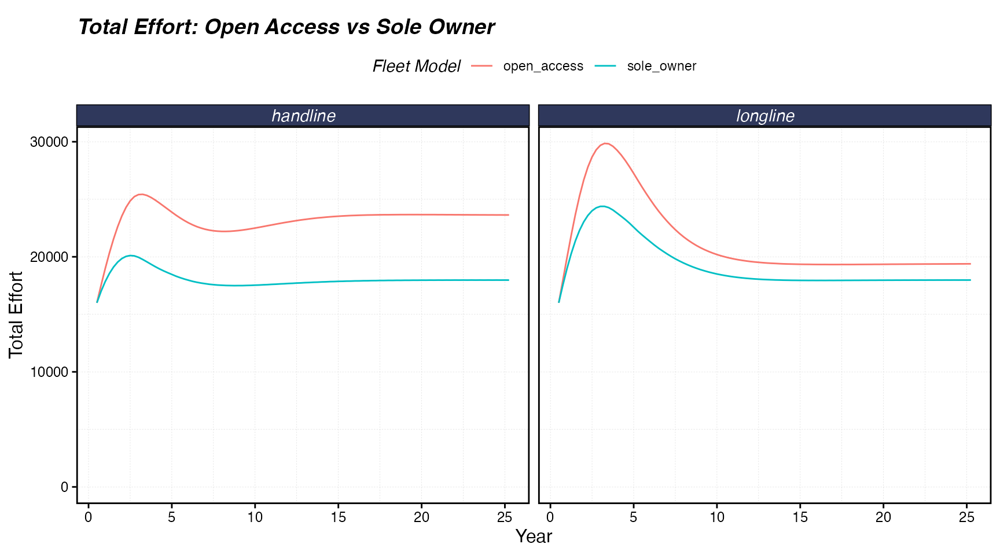
The sole owner settles at lower effort than open access for both fleets, because it stops expanding when marginal returns hit zero rather than waiting for average returns to be exhausted.
We can also compare profits over time. Open access should converge toward zero, while the sole owner retains positive profits at equilibrium (the hallmark of MEY).
profit_ts <- bind_rows(
proc_4a$fleets %>%
group_by(step, fleet) %>%
summarise(revenue = sum(revenue), catch = sum(catch), .groups = "drop") %>%
mutate(model = "open_access"),
proc_4b$fleets %>%
group_by(step, fleet) %>%
summarise(revenue = sum(revenue), catch = sum(catch), .groups = "drop") %>%
mutate(model = "sole_owner")
)
ggplot(profit_ts, aes(step * time_step, revenue, color = model)) +
geom_line() +
facet_wrap(~fleet) +
scale_x_continuous(name = "Year") +
labs(title = "Revenue: Open Access vs Sole Owner",
color = "Fleet Model",
y = "Revenue")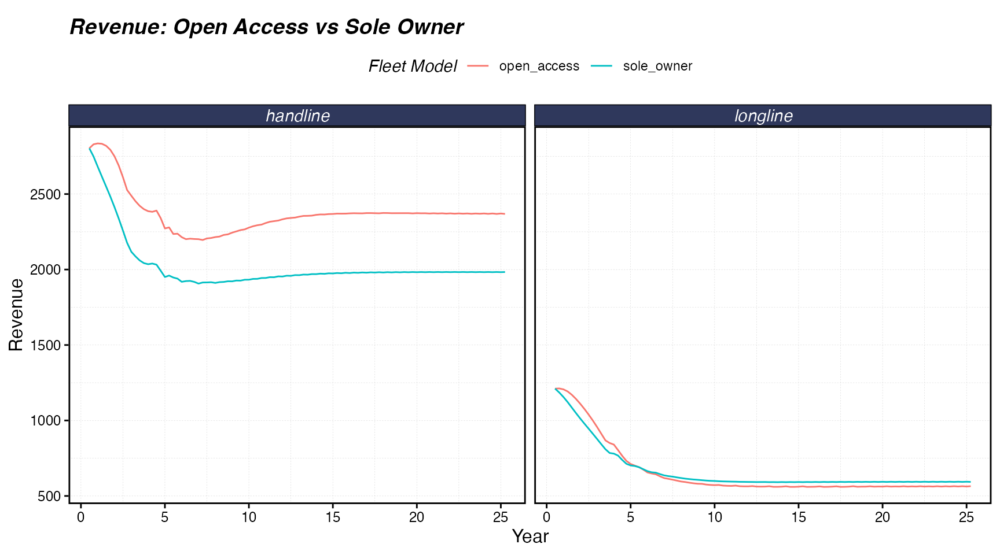
Finally, compare the spatial effort and biomass footprints at the end of each simulation.
plot_effort(sim_4a, "longline", "Longline Effort (open_access)")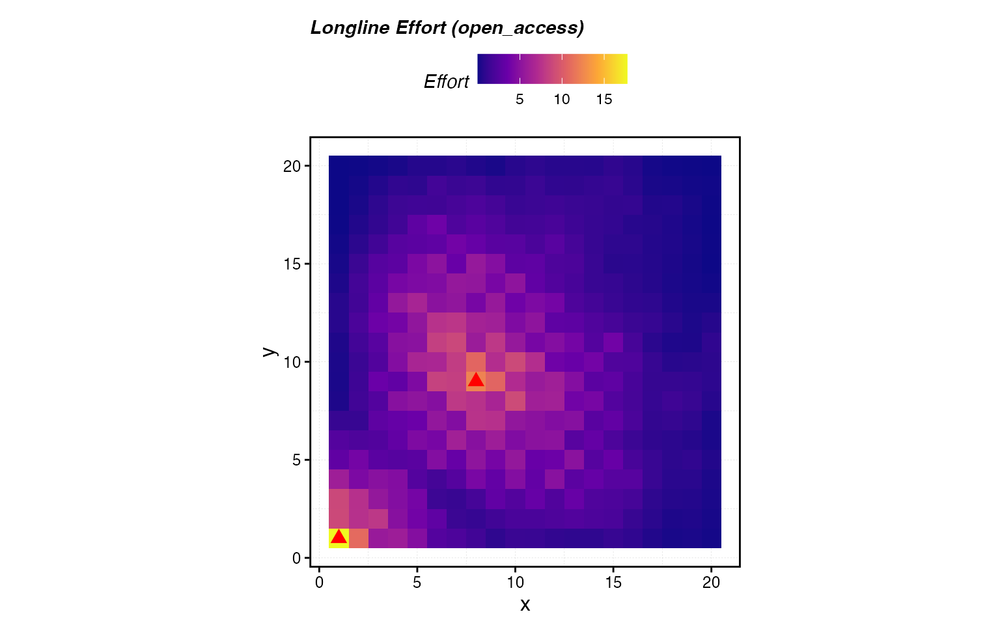
plot_effort(sim_4b, "longline", "Longline Effort (sole_owner)")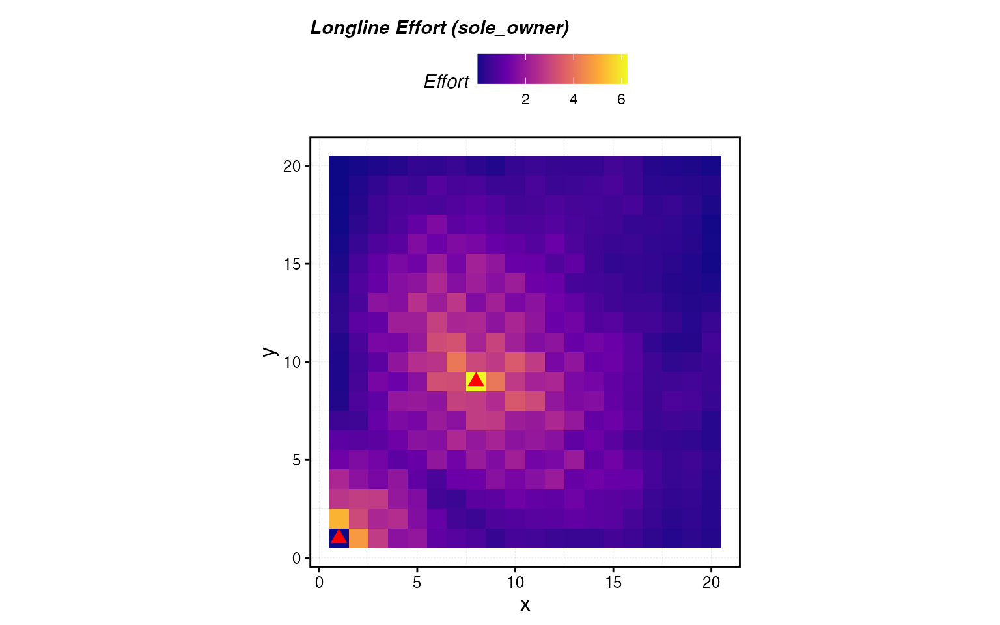
plot_biomass(proc_4a, "SSB — open_access")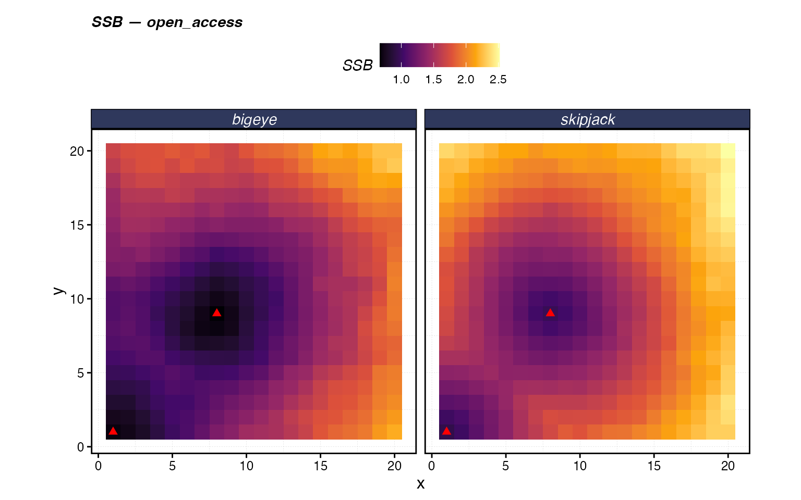
plot_biomass(proc_4b, "SSB — sole_owner")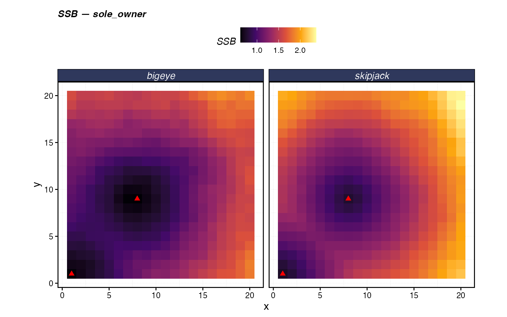
The sole owner leaves more biomass in the water because it fishes less intensively. This is the fundamental tradeoff: open access maximizes effort and dissipates rents, while the sole owner restrains effort to maximize total profit, resulting in higher biomass and positive economic returns.
Scenario 5: spatial-allocation memory
The previous scenarios all show smooth, well-behaved dynamics — even
after the MPA closure in Scenario 4. The one-step-lag feedback that
motivates memory_halflife only bites strongly under
specific configurations. The most reliable way to surface it is with a
marginal_profit allocator: the marginal value of effort at
a patch responds directly to how much was fished there last step, so a
single-step lag can produce period-2 sawtooth in patch effort and
(faintly) in catch.
Here we set up a 2-fleet system with both fleets using
marginal_profit allocation and close an offshore corner
mid-run, then sweep memory_halflife across a small range.
The expectation: at memory_halflife = 0 (legacy behavior)
the dynamics show visible high-frequency wiggle in individual patches;
modest memory dampens it cleanly; very long memory introduces a
different problem — low-frequency overshoot driven by the phase lag the
smoothing imposes.
years_5 <- 20
mpa_year_5 <- 8
# Close an offshore corner starting at year 8
mpa_locs_5 <- expand_grid(x = 1:resolution[1], y = 1:resolution[2]) %>%
mutate(mpa = x >= 12 & y >= 12)
manager_5 <- list(mpas = list(locations = mpa_locs_5, mpa_year = mpa_year_5))
# Fleet builder parameterised on a single shared halflife (both fleets get it).
# Uses the same metier / fleet structure as Scenarios 1-3.
build_memory_fleets <- function(halflife) {
fleets <- list(
"longline" = create_fleet(
list(
"bigeye" = Metier$new(
critter = fauna$bigeye, price = 10,
sel_form = "logistic", sel_start = 1, sel_delta = 0.01,
catchability = 0, p_explt = 2
),
"skipjack" = Metier$new(
critter = fauna$skipjack, price = 5,
sel_form = "logistic", sel_start = 0.8, sel_delta = 0.1,
catchability = 0, p_explt = 1
)
),
ports = ports, base_effort = patches, resolution = resolution,
spatial_allocation = "marginal_profit",
fleet_model = "constant_effort",
cr_ratio = 1, travel_fraction = 0.7,
memory_halflife = halflife,
responsiveness = 0.025
),
"handline" = create_fleet(
list(
"bigeye" = Metier$new(
critter = fauna$bigeye, price = 10,
sel_form = "logistic", sel_start = 1.2, sel_delta = 0.1,
catchability = 0, p_explt = 1
),
"skipjack" = Metier$new(
critter = fauna$skipjack, price = 8,
sel_form = "logistic", sel_start = 0.5, sel_delta = 0.2,
catchability = 0, p_explt = 2
)
),
ports = ports, base_effort = patches, resolution = resolution,
spatial_allocation = "marginal_profit",
fleet_model = "constant_effort",
cr_ratio = 1, travel_fraction = 0.5,
memory_halflife = halflife,
responsiveness = 0.025
)
)
tune_fleets(fauna, fleets, tune_type = "depletion")
}
halflives_5 <- c(0, 1, 2)
runs_5 <- lapply(halflives_5, function(hl) {
sim <- simmar(fauna = fauna, fleets = build_memory_fleets(hl),
years = years_5, manager = manager_5)
proc <- process_marlin(sim, time_step = time_step)
list(halflife = hl, proc = proc)
})Two patch-level metrics, computed on the post-MPA window:
- lag-1 autocorrelation of patch effort (low / negative ⇒ sawtooth)
-
step-difference CV:
sd(diff(effort)) / mean(effort), capturing high-frequency wiggle on top of any trend
post_mpa_metrics <- function(r, burn_after_mpa_years = 2) {
start_step <- (mpa_year_5 + burn_after_mpa_years) * seasons
r$proc$fleets %>%
filter(step > start_step) %>%
arrange(fleet, patch, step) %>%
group_by(fleet, patch) %>%
summarise(
mean_effort = mean(effort, na.rm = TRUE),
effort_acf1 = if (n() > 3 && stats::sd(effort, na.rm = TRUE) > 0)
stats::acf(effort, plot = FALSE, lag.max = 1)$acf[2] else NA_real_,
step_diff_cv = if (n() > 3 && mean(effort, na.rm = TRUE) > 1e-9)
stats::sd(diff(effort), na.rm = TRUE) / mean(effort, na.rm = TRUE) else NA_real_,
.groups = "drop"
) %>%
mutate(halflife = r$halflife)
}
all_metrics <- purrr::map_dfr(runs_5, post_mpa_metrics) %>%
filter(mean_effort > 1e-3)
all_metrics %>%
group_by(halflife, fleet) %>%
summarise(
n_patches = n(),
median_effort_acf1 = signif(median(effort_acf1, na.rm = TRUE), 3),
median_step_diff_cv = signif(median(step_diff_cv, na.rm = TRUE), 3),
p90_step_diff_cv = signif(quantile(step_diff_cv, 0.9, na.rm = TRUE), 3),
.groups = "drop"
) %>%
knitr::kable(digits = 3,
caption = "Post-MPA per-patch effort autocorrelation and high-frequency wiggle, by halflife and fleet.")| halflife | fleet | n_patches | median_effort_acf1 | median_step_diff_cv | p90_step_diff_cv |
|---|---|---|---|---|---|
| 0 | handline | 319 | NA | 0 | 0 |
| 0 | longline | 319 | NA | 0 | 0 |
| 1 | handline | 319 | NA | 0 | 0 |
| 1 | longline | 319 | NA | 0 | 0 |
| 2 | handline | 319 | NA | 0 | 0 |
| 2 | longline | 319 | NA | 0 | 0 |
# Pick the 3 most-oscillating patches per fleet under the lowest halflife;
# trace each across all three runs.
baseline_hl <- min(halflives_5)
top_patches <- all_metrics %>%
filter(halflife == baseline_hl) %>%
group_by(fleet) %>%
slice_max(step_diff_cv, n = 3, with_ties = FALSE) %>%
ungroup() %>%
select(fleet, patch)
trace_df <- purrr::map_dfr(runs_5, function(r) {
r$proc$fleets %>%
semi_join(top_patches, by = c("fleet", "patch")) %>%
transmute(fleet, patch, step, year = step * time_step, effort,
halflife = factor(r$halflife, levels = sort(unique(halflives_5))))
})
ggplot(trace_df, aes(year, effort, color = halflife)) +
geom_line() +
geom_vline(xintercept = mpa_year_5, linetype = "dashed", alpha = 0.5) +
facet_grid(fleet ~ patch, scales = "free_y", labeller = label_both) +
scale_y_continuous(limits = c(0,NA)) +
scale_color_viridis_d(option = "C", end = 0.85) +
labs(
title = "Patch effort traces, most-oscillating patches per fleet",
subtitle = sprintf("Dashed line: MPA closure at year %d. halflife is years (season-agnostic).",
mpa_year_5),
x = "Year", y = "Patch effort", color = "halflife (yr)"
)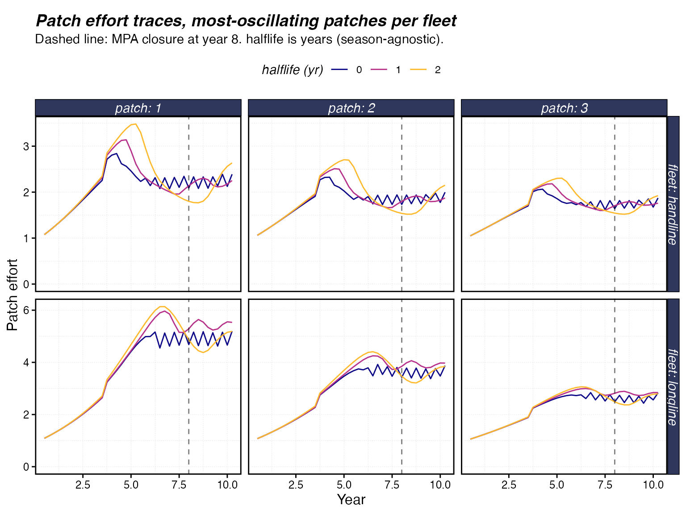
catch_ts <- purrr::map_dfr(runs_5, function(r) {
r$proc$fauna %>%
group_by(step) %>%
summarise(catch = sum(c, na.rm = TRUE), .groups = "drop") %>%
mutate(year = step * time_step,
halflife = factor(r$halflife, levels = sort(unique(halflives_5))))
})
ggplot(catch_ts, aes(year, catch, color = halflife)) +
geom_line() +
geom_vline(xintercept = mpa_year_5, linetype = "dashed", alpha = 0.5) +
scale_color_viridis_d(option = "C", end = 0.85) +
labs(title = "Total catch over time",
x = "Year", y = "Total catch", color = "halflife (yr)")
Reading the patch traces: halflife = 0 shows the
high-frequency wiggle that motivates the parameter, sharpened further by
the MPA closure. halflife = 1 (one year of memory) sits
near the median of the sawtooth and removes the high-frequency
component. halflife = 2 smooths further but begins to
introduce slower swings driven by phase lag: the fleet’s perceived
objective is now lagging the real one by ~3 years, so it reallocates
toward patches that used to be high-value.
When does memory matter?
The susceptibility to one-step-lag oscillation depends strongly on a fleet’s configuration. Memory is not a universal upgrade; in many configurations it adds nothing or hurts.
-
Allocation strategy.
marginal_profitandmarginal_revenuehave the most direct fleet-biomass feedback — the objective at a patch responds immediately to last step’s fishing there — and are the most prone to sawtooth.ppue/profit/rpue/revenueintegrate over the production curve, which damps the feedback.manualanduniformignore the buffet entirely, so memory does nothing for them (and is correctly skipped bysimmar()). -
Fleet model.
constant_effortfleets have only the spatial-allocation feedback loop, so the spatial smoothing in memory is the only mechanism stabilising them.open_accessandsole_ownerfleets also adjust total effort each step from a fleet-wide profitability signal, which has its own slow damping built in via the annual entry/exit caps — but that signal itself is not smoothed bymemory_halflife. If you observe sawtooth in total fleet effort (rather than in patch-level allocation), memory will not fix it; the right knob lives in the open-access / sole-owner parameters. -
System structure. Strong fleet-biomass coupling
(high catchability relative to stock productivity, fast movement that
smooths biomass and equalises marginals, MPA closures that force
redistribution) all amplify the one-step-lag feedback. Without any of
these, the canonical scenarios above behave smoothly even at
halflife = 0.
Sensible values for memory_halflife depend on the time
scale of stock and fleet dynamics. For most marine fisheries with annual
or sub-annual seasons, 0.5–1.5 years is a useful
starting range. If catch or effort trajectories at a chosen halflife
show slow swings that aren’t present at
memory_halflife = 0, reduce it; you’ve crossed into the
phase-lag regime. If the system is well-behaved at
memory_halflife = 0, leave it there.
Runtime Comparison
The marginal_profit spatial allocation strategy and the
sole_owner fleet model both require computing numerical
derivatives of the profit function via calc_marginal_value
at every time step, which adds extra go_fish evaluations
(one per fleet at minimum). This makes them meaningfully slower than
strategies that only need the quantities already computed by the
standard go_fish call.
runtime <- tibble(
scenario = c("rpue / revenue", "ppue / profit", "marginal_profit / rpue",
"open_access (ppue)", "sole_owner (ppue)"),
seconds = c(time_1["elapsed"], time_2["elapsed"], time_3["elapsed"],
time_4a["elapsed"], time_4b["elapsed"]),
years_run = c(rep(years, 3), years_4, years_4)
) %>%
mutate(
sec_per_year = round(seconds / years_run, 2),
relative = round(sec_per_year / min(sec_per_year), 1)
)
knitr::kable(runtime,
col.names = c("Scenario", "Seconds", "Years", "Sec/Year", "Relative to fastest"),
digits = 2,
caption = "Wall-clock time for simmar() by scenario. Sec/Year normalizes for different run lengths.")| Scenario | Seconds | Years | Sec/Year | Relative to fastest |
|---|---|---|---|---|
| rpue / revenue | 0.12 | 20 | 0.01 | 1 |
| ppue / profit | 0.12 | 20 | 0.01 | 1 |
| marginal_profit / rpue | 0.34 | 20 | 0.02 | 2 |
| open_access (ppue) | 0.29 | 50 | 0.01 | 1 |
| sole_owner (ppue) | 0.83 | 50 | 0.02 | 2 |
Summary Comparison
To see all five spatial allocation strategies side by side, we extract final-step effort across Scenarios 1–3 and compare in a single figure.
extract_effort <- function(sim, fleet_name, label) {
final_step <- sim[[length(sim)]]
effort_vec <- final_step[[1]]$e_p_fl[, fleet_name]
expand_grid(x = 1:resolution[1], y = 1:resolution[2]) %>%
mutate(
effort = effort_vec,
strategy = label
)
}
all_efforts <- bind_rows(
extract_effort(sim_1, "longline", "rpue"),
extract_effort(sim_1, "handline", "revenue"),
extract_effort(sim_2, "longline", "ppue"),
extract_effort(sim_2, "handline", "profit"),
extract_effort(sim_3, "longline", "marginal_profit")
) %>%
mutate(strategy = factor(strategy,
levels = c("rpue", "revenue", "ppue", "profit", "marginal_profit")))
ggplot(all_efforts) +
geom_tile(aes(x, y, fill = effort)) +
geom_point(data = ports, aes(x, y),
color = "red", size = 2, shape = 17) +
scale_fill_viridis_c(option = "C") +
facet_wrap(~strategy, ncol = 3) +
coord_equal() +
labs(
title = "Effort Distribution by Spatial Allocation Strategy",
subtitle = "Red triangles = port locations",
fill = "Effort"
)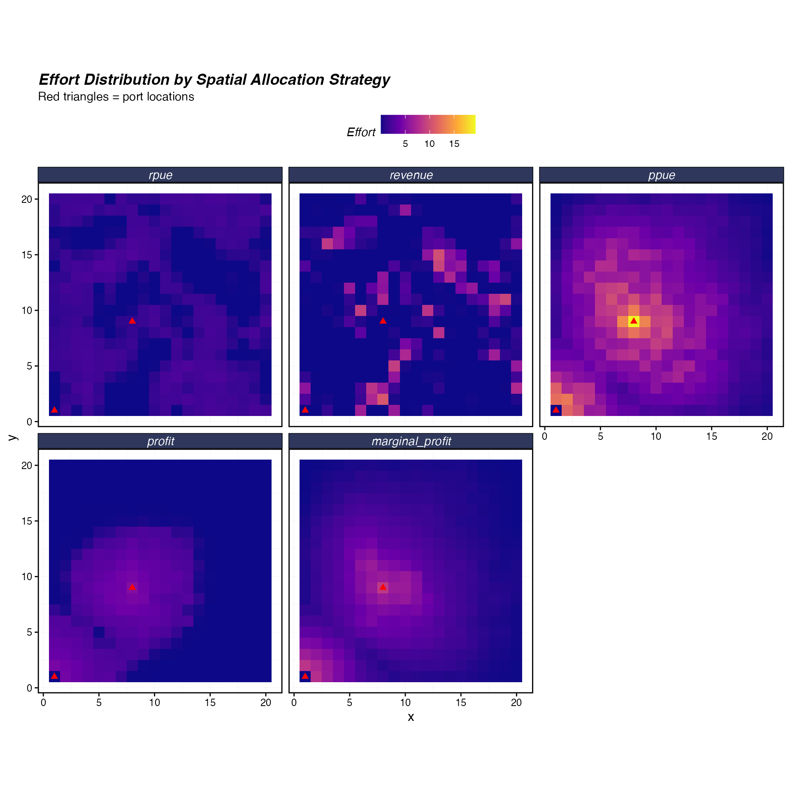
We can do the same for SSB to see how each allocation strategy shapes the resulting biomass landscape. The rows correspond to the fleet allocation pairings (longline / handline), and the columns to each species.
extract_ssb <- function(proc, longline_alloc, handline_alloc) {
last_step <- max(proc$fauna$step)
proc$fauna %>%
filter(step == last_step) %>%
group_by(critter, x, y) %>%
summarise(ssb = sum(ssb, na.rm = TRUE), .groups = "drop") %>%
mutate(strategy = paste0(longline_alloc, " / ", handline_alloc))
}
all_ssb <- bind_rows(
extract_ssb(proc_1, "rpue", "revenue"),
extract_ssb(proc_2, "ppue", "profit"),
extract_ssb(proc_3, "marginal_profit", "rpue")
)
ggplot(all_ssb) +
geom_tile(aes(x, y, fill = ssb)) +
geom_point(data = ports, aes(x, y),
color = "red", size = 1.5, shape = 17) +
scale_fill_viridis_c(option = "B") +
facet_grid(strategy ~ critter) +
coord_equal() +
labs(
title = "SSB by Allocation Strategy (longline / handline)",
subtitle = "Red triangles = port locations",
fill = "SSB"
)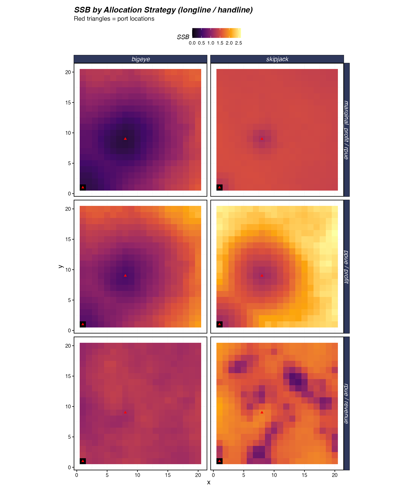
Some patterns to look for across these panels:
-
rpuevsrevenue: The per-unit strategy (rpue) tends to spread effort more evenly, while the total strategy (revenue) concentrates effort in high-biomass patches. Since neither accounts for travel costs, effort extends freely into remote patches. -
ppuevsprofit: Adding travel costs shifts effort toward ports. The per-unit version (ppue) is especially reluctant to send effort far from port, creating biomass refugia in remote areas. -
marginal_profit: Produces the smoothest effort surface among cost-aware strategies, because it directly penalizes diminishing returns from effort concentration. This leads to the most spatially uniform depletion. -
sole_ownervsopen_access: With the same spatial allocation (ppue), the sole owner reaches equilibrium at lower total effort and higher biomass than open access, retaining positive profits where open access dissipates them. This is the classic MEY vs. open-access result, now playing out in a spatially explicit setting.
The choice of spatial_allocation can substantially
change the spatial footprint of fishing, which in turn affects local
depletion patterns, the effectiveness of spatial management tools like
MPAs, and the economic outcomes of the fishery. See the
port-distance and fleet-management vignettes
for more on how these fleet options interact with other
marlin features.